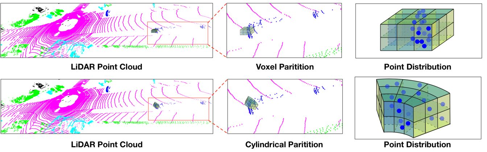

|
Zhu, Xinge |
|

Biography
Xinge Zhu is pursuing his PhD degree at Multimedia lab, his supervisor is Prof. Dahua Lin.
His research interests include computer vision and deep learning, particularly in Scene Understanding and Perception, Point-cloud 3D Detection and Segmentation.
News
- 2021.07: NEW!! Extended version of Cylinder3D is accepted by TPAMI
- 2021.03: NEW!! Three papers are accepted by CVPR2021 (1 Oral and 2 Poster). Cylinder3D is accepted as Oral presentation
- 2020.12: Our team achieves the 2nd place in the challenge of nuScenes LiDAR segmentation with Cylinder3D, and the best camera-only method in nuScenes 3D detection
- 2020.11: We release the code of Cylinder3D, which achieves the 1st place in the leaderboard of SemanticKITTI Semantic segmentation. Based on Cylinder3D, we also achieve the 1st place in the leaderboard of SemanticKITTI Panoptic segmentation.
- 2020.09: Two papers were accepted by CoRL2020.
- 2020.07: Three papers are accepted by ECCV2020.
Challenges
- nuScenes 3D Detection, Best camera-only method (2020.12)
- nuScenes LiDAR Segmentation, 2nd place (2020.12)
- SemanticKITTI Semantic Segmentation, Rank 1st (2020.11)
- SemanticKITTI Panoptic Segmentation, Rank 1st
- Lyft 3D Detection Challenge, Golden Medal (rank 4 among 500+ teams, 2019.7)
- nuScenes 3D Detection Challenge, Runner-up (rank 2 among 13 teams, 2019.3)
Selected Publications (Full List)
|  |
Cylindrical and Asymmetrical 3D Convolution Networks for LiDAR Segmentation
[PDF][Code] Xinge Zhu*, Hui Zhou*, Tai Wang, Fangzhou Hong, Yuexin Ma, Wei Li, Hongsheng Li, Dahua Lin in CVPR 2021 (Oral) 1st place in the leaderboard of SemanticKITTI semantic segmentation (Nov.16 2020) |  |
SSN: Shape Signature Networks for Multi-class Object Detection from Point Clouds
[PDF][Code] Xinge Zhu, Yuexin Ma, Tai Wang, Yan Xu, Jianping Shi, Dahua Lin in ECCV 2020 |
 |
Adapting Object Detectors via Selective Cross-Domain Alignment [PDF][Code] Xinge Zhu, Jiangmiao Pang, Ceyuan Yang, Jianping Shi, Dahua Lin in CVPR 2019 |
 |
Not All Areas Are Equal: Transfer Learning for Semantic Segmentation via Hierarchical Region Selection [PDF] Ruoqi Sun*, Xinge Zhu*, Chongruo Wu, Chen Huang, Jianping Shi, Lizhuang Ma in CVPR 2019 (Oral) *equal contribution |
 |
TrafficPredict: Trajectory Prediction for Heterogeneous Traffic-Agents [PDF] [Webpage][Dataset] Yuexin Ma*, Xinge Zhu*, Sibo Zhang, Ruigang Yang, Wenping Wang, Dinesh Manocha in AAAI 2019 (Oral) |